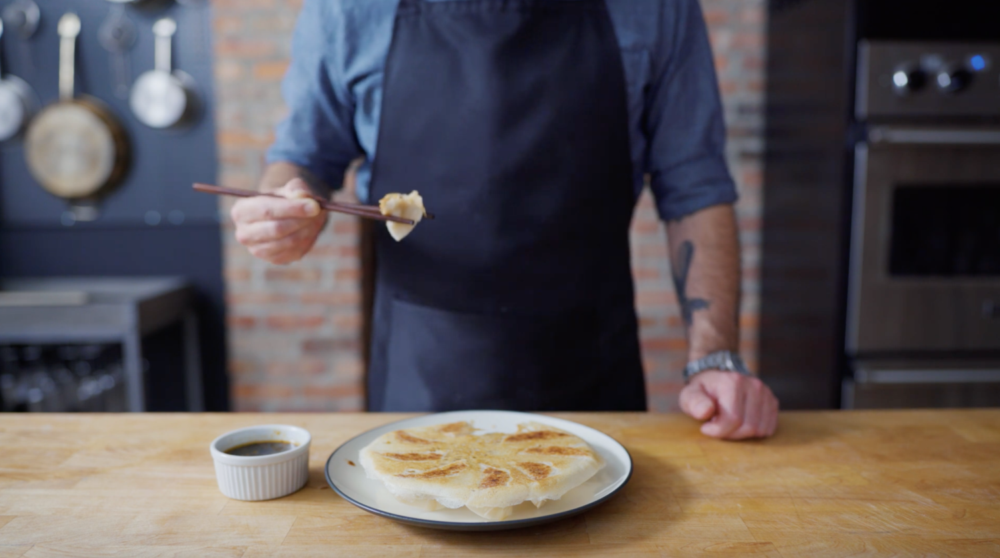

Potstickers

Description
Potstickers are the perfect anytime shareable snack, appetizer, or full-blown meal (we don’t judge)! Feel free to skip the homemade wrappers and buy them from your local Asian grocer, often found in the frozen food section.
Ingredients
Wrapper Ingredients
- 250 grams all-purpose flour
- 130 ml water
Filling Ingredients
- 1 pound ground pork
- 1 carrot, coarsely grated
- 2 scallions, thinly sliced
- 1 cup Napa cabbage, thinly sliced
- 1 garlic clove, grated
- 1-inch ginger, peeled and grated
- 1 egg
- 1 Tbsp dark soy sauce
- 1 Tbsp toasted sesame oil
- 1 Tbsp mirin
- 1.5 tsp kosher salt
- 1 tsp freshly ground black pepper
Dipping Sauce Ingredients
- 1/2 cup soy sauce
- 1/4 cup rice vinegar
- 1 Tbsp granulated sugar
- 1/2 inch ginger, peeled and grated
- 1 Tbsp scallions, thinly sliced
- 1 Tbsp toasted sesame oil
- Optional: 1 tsp sriracha (to taste)
- 1/4 cup water
Steps
Wrappers Method
- Combine water and flour in a large mixing bowl.
- Hand mix the flour and water until a shaggy dough forms and all of the flour is incorporated.
- Cover the bowl with plastic wrap and let the dough rest for 10 minutes.
- Using a stand mixer with a dough hook attachment, knead the dough on a medium speed until the dough becomes soft, cohesive, and elastic, about 5-8 minutes. Be sure to scrape down the dough from the hook periodically.
- Once again, cover the bowl with plastic wrap and allow to rest for 1 hour. (Note: If you’d like to use the wrapper immediately, now would be a good time to make the filling.)
- Cut the wrapper dough into two equal portions.
- Using a stand mixer with a pasta roller attachment and working with one half at a time, begin rolling the dough using the widest setting. Be sure to continuously dust the dough with flour to prevent any sticking.
- Continue rolling out the dough reducing the thickness each time the dough is passed through the rollers.
- Once the dough has been rolled to the thinnest setting, place the dough on a well-floured work surface.
- Using a 3-inch biscuit cutter, cut out rounds from the dough. Stack the cut wrappers, sprinkling with flour between each layer.
- Once you’ve cut about 30 wrappers, fill them immediately or wrap them tightly with plastic wrap and store them in the refrigerator or freezer until ready to use. (If freezing, thaw the wrappers in the refrigerator for 4-6 hours before using.)
Filling Method
- Combine all ingredients in a medium bowl.
- Using your hands, gently mix until all the ingredients are evenly distributed.
- Cover the bowl in plastic wrap and refrigerate until ready to use.
Dipping Sauce Method
- Combine all ingredients in a small bowl and whisk to combine.
- Cover and reserve until ready to serve.
Cooking Method
- Carefully place about 2 teaspoons of filling into the center of each wrapper.
- Using your finger, brush 1/2 of the circumference of the wrapper with water.
- Fold the other half of the wrapper over the filling and seal the dumpling shut with small pleats.
- Repeat with the remaining filling and wrappers. (Note: At this point, you can wrap and freeze the dumpling for later use.)
- In a medium/large nonstick pan, heat 1 Tablespoon of vegetable oil over medium/high heat.
- Add the dumplings flat-side down and allow to fry for about 3 minutes or until the bottom is golden brown and crispy.
- Carefully (to avoid splashing) add ¼ cup water and cover the pan with a lid. Reduce the heat to medium/low and steam for about 7-10 minutes.
- Repeat with remaining dumplings and serve with the dipping sauce.
- To cook the dumplings with the skirt, again heat 1 Tablespoon of oil and fry the dumplings until the bottom is crispy.
- Then, add the skirt mixture to the pan and cover it with a lid. Steam the dumplings for about 7 minutes.
- Uncover the pan and continue cooking the dumplings over medium heat until the skirt has browned about 3-4 minutes.
- Remove the pan from the heat and place a plate (slightly smaller than the circumference of the pan) over the dumplings. With (oven-gloved hands) carefully flip the dumplings onto the plate.
- Serve with dipping sauce.